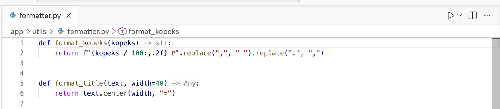
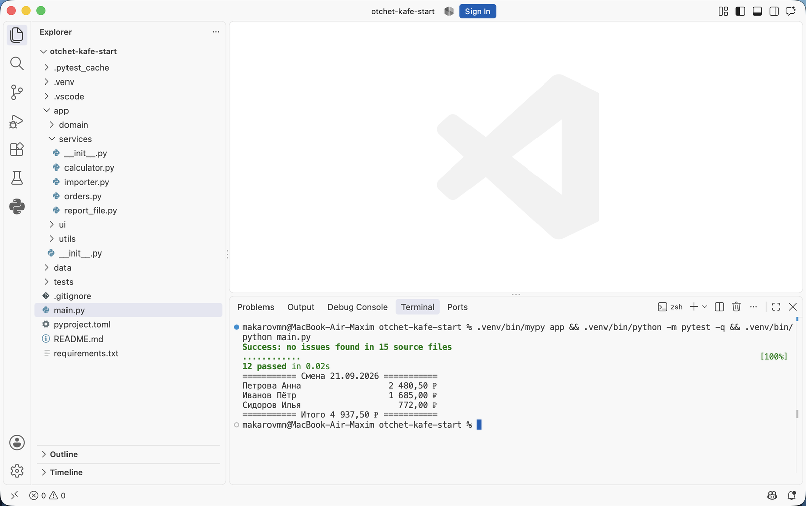
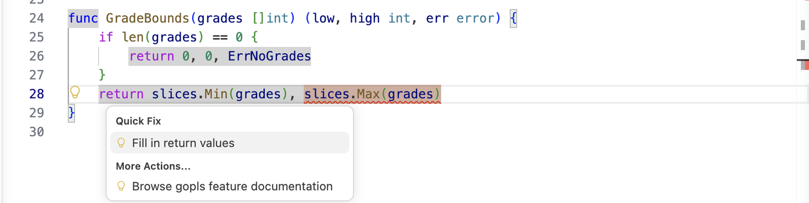
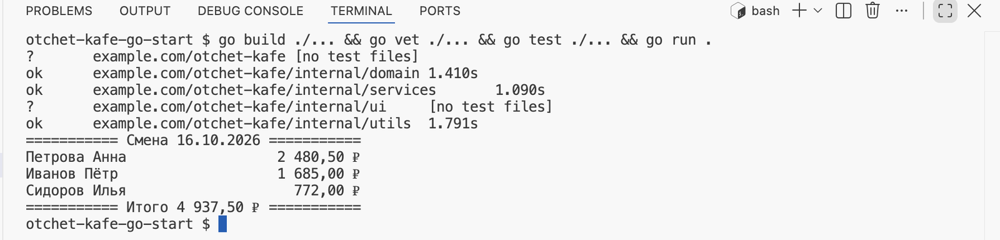

Аннотации типов и документация кода · МДК.01.01 · разработка программных модулей
Глава 4.5
Практика:
аннотации в проекте
В этой главе проект «Отчёт кафе» без единой аннотации доводится до чистой проверки mypy. Разобраны порядок работы по пакетам, способ выбрать тип для каждой функции, подсказки Pylance с готовым типом результата, один модуль целиком до и после и то, как после каждого пакета уменьшается число ошибок. Итог работы совпадает со вторым архивом темы — с него начинается часть про документацию.
- Категория
- Практика
- Время на паре
- Около 60 минут
- Проверка
- mypy, тесты, запуск
- Результат
- Проект с аннотациями,
mypy appбез ошибок
§1Задача
В главах 4.1–4.4 аннотации читались и проверялись в готовом коде второго архива: в 4.2 — как записать тип, в 4.3 — как запустить проверку, в 4.4 — как прочитать её сообщения. В этой главе их пишут самостоятельно. Первый архив темы — рабочий проект без аннотаций. Отчёт печатается, двенадцать тестов проходят, а mypy app находит семнадцать функций без типов. Задача: расставить аннотации у всех семнадцати, не меняя поведения программы, и получить от mypy ответ Success.
§2Подготовка
Работа идёт в папке первого архива, подготовленной в главе 4.1: окружение .venv создано, зависимости установлены. Перед началом выполните три шага.
- Включите проверку в редакторе так же, как в главе 4.3: настройки, вкладка Workspace, параметр
python.analysis.typeCheckingMode— значениеbasic. Проверьте, что выбран интерпретатор.venv. - Запустите проект и тесты:
.venv/bin/python main.py.venv\Scripts\python main.pyи.venv/bin/python -m pytest -q.venv\Scripts\python -m pytest -q. Запомните итог отчёта —4 937,50 ₽— и число тестов —12 passed: после работы они должны остаться теми же. - Запустите
.venv/bin/mypy app.venv\Scripts\mypy app. Семнадцать строк вывода — список работы; такой же вывод показан в главе 4.3, §8.
§3Порядок: от листьев к корню
Семнадцать функций лежат в десяти файлах, и первым решается вопрос, с какого файла начать. Модули проекта зависят друг от друга. Это видно по импортам: domain вызывает normalize_name из utils, services создаёт объекты Order из domain, а main.py вызывает services, ui и utils. Аннотации расставляют в обратном порядке — начиная с модулей, которые ничего из проекта не вызывают.
Файл main.py в архиве оставлен с аннотациями: его функция build_report(path: Path) -> list[str] служит образцом записи.
utils, затем domain, затем services. Когда очередь доходит до services, поля Order из domain уже аннотированы, и редактор подсказывает их при наборе. Пакет ui ни от кого не зависит, его аннотируют последним. Цифры — порядок работы и число функций без аннотаций в пакете.§4Как выбрать тип
Порядок файлов задан. Внутри каждого файла для каждой функции нужно решить, какие типы написать. Ответ ищется в трёх местах по очереди.
Откуда брать тип
order.kopeks — это list[Order]. Если к нему вызывают .split() — это str.main.py в load_orders передаётся Path("data/smena.csv") — значит, параметр path: Path.return min(grades), max(grades) — пара целых, tuple[int, int]. Нет return со значением — -> None. Есть yield — Iterator[...].Когда сомнения остаются, ставят предполагаемый тип и запускают mypy: неверное предположение он покажет ошибкой в месте вызова. Для выражений внутри функции помогают наведение указателя на имя и временная строка reveal_type(...) — оба способа разобраны в главе 4.3, §9. Как записать найденный тип, показано в главе 4.2. Сообщения, которыми проверка отвечает на неверную запись, собраны в главе 4.4, §15.
§5Подсказки типа результата
Третье место из §4 — return — Pylance умеет читать сам: тип результата он выводит из тела функции. Выведенный тип можно показать прямо в коде — серой надписью после закрывающей скобки. Такую надпись называют подсказкой вставки (inlay hint): она не входит в текст файла, пока её не вставят.
Включите подсказки типа результата
Откройте настройки (Ctrl + ,, на macOS — Cmd + ,), вкладку Workspace, и введите в поиске inlay hints function return types. Поставьте флажок у параметра Python › Analysis › Inlay Hints: Function Return Types. В .vscode/settings.json появится строка "python.analysis.inlayHints.functionReturnTypes": true.
Откройте модуль и прочитайте подсказки
Откройте app/utils/formatter.py. После подписи каждой функции появится серый тип результата.

format_kopeks подсказка -> str: функция возвращает f-строку, и тип ясен из тела. У format_title — -> Any: результат — text.center(...), а тип text неизвестен, значит, неизвестен и результат.Вставьте подходящую подсказку двойным щелчком
Дважды щёлкните по серому -> str у format_kopeks: подсказка станет частью кода. Тип параметра Pylance не подсказывает, его пишут сами: def format_kopeks(kopeks: int) -> str:.
Подсказку -> Any не вставляют: Any выключает проверку, и в работах курса он запрещён. Сначала аннотируют параметры — text: str, width: int = 40, — и подсказка сменится на -> str: теперь известно, что text.center(...) вызывается у строки.
Перед вставкой подсказку сверяют с тем, что функция должна возвращать по смыслу: Pylance выводит тип из текущего тела, и если в теле ошибка, в подсказку попадёт неверный тип. После каждого пакета запускают mypy. Когда работа закончена, флажок можно снять.
§6Один модуль до и после
Как приёмы §4 и §5 работают вместе, видно на одном модуле целиком — app/services/orders.py из пакета services. В первом архиве mypy сообщает о нём три строки — по одной на функцию:
app/services/orders.py:7: error: Function is missing a type annotation [no-untyped-def] app/services/orders.py:14: error: Function is missing a type annotation [no-untyped-def] app/services/orders.py:26: error: Function is missing a type annotation [no-untyped-def]
app/services/orders.pyпереключите вариант
def load_orders(path): return [ Order(waiter=row["waiter"], kopeks=int(row["kopeks"])) for row in read_rows(path) ] def revenue_by_waiter(orders, top=0): ... totals = {} ... def sort_orders_in_place(orders): orders.sort(key=lambda order: -order.kopeks)
Что видноИз подписей неясно, что такое path и что в списке orders; неясно, что возвращают функции. Ответы находятся только чтением тел.
def load_orders(path: Path) -> list[Order]: return [ Order(waiter=row["waiter"], kopeks=int(row["kopeks"])) for row in read_rows(path) ] def revenue_by_waiter(orders: list[Order], top: int = 0) -> dict[str, int]: ... totals: dict[str, int] = {} ... def sort_orders_in_place(orders: list[Order]) -> None: orders.sort(key=lambda order: -order.kopeks)
Что изменилосьСемь аннотаций в подписях и одна у переменной. top=0 стало top: int = 0 — с аннотацией вокруг знака равенства ставят пробелы. Тела функций не тронуты.
Как выбраны типы. path — объект Path, так его передаёт main.py. Список orders содержит заказы: из элементов берут .waiter и .kopeks. sort_orders_in_place ничего не возвращает, поэтому -> None. Переменной totals нужна аннотация, потому что по пустому словарю {} тип ключей и значений не определить.
§7Трудные места проекта
Большинство функций проекта устроены как в orders.py: тип параметра виден из того, как его используют, тип результата — из return. В таблице собраны места, где решение не такое очевидное, и причина каждого решения.
| Место | Аннотация | Почему так |
|---|---|---|
read_rows в importer.py | -> Iterator[dict[str, str]] | В теле yield from — это генератор; строки CSV читаются словарями из строк |
grade_bounds | -> tuple[int, int] | Возвращается пара: минимум и максимум |
__post_init__ у Order | -> None | Метод проверяет данные и ничего не возвращает |
Shift.__init__ | (self, day: date) -> None | У __init__ результат всегда None; для date нужен импорт, он уже есть в файле |
self.orders в Shift | self.orders: list[Order] = [] | Пустой список — тип элементов не определить без аннотации |
self | без аннотации | Тип self проверка выводит сама — это объект того же класса |
поля Order | уже стоят | У dataclass аннотации — объявления полей, в первом архиве они оставлены |
§8Как уменьшается число ошибок
Работа идёт по пакетам в порядке §3, и после каждого пакета видно, сколько осталось. Запускайте .venv/bin/mypy app.venv\Scripts\mypy app. Число ошибок в последней строке вывода — ход работы. Ниже настоящие итоги прогонов при работе в порядке из §3:
Итог mypy после каждого пакета
Found 17 errors in 10 files
первый архив
Found 12 errors in 7 files
−5
Found 8 errors in 5 files
−4
Found 1 error in 1 file
−7
Success: no issues found
готово
Число уменьшается ровно на количество функций в пакете — если это не так, значит, в аннотации ошибка и mypy нашёл несовпадение. Строку с ней он напечатает выше итога.
Когда mypy ответил Success, проверьте, что поведение не изменилось: тесты и запуск должны дать то же, что в §2.

Success: no issues found in 15 source files — типы расставлены во всём пакете. 12 passed — поведение не изменилось. Итог отчёта — те же 4 937,50 ₽, что до работы.Получившийся проект совпадает со вторым архивом темы во всех файлах, кроме README, — это проверено сравнением. С этого проекта начинается следующая часть темы: в главе 4.6 в него добавляются описания.
§9Что сдаётся с пары
Работа закончена, когда выполнены все условия ниже; по ним её и проверяют.
Работа принята, когда
mypy app отвечает Success: no issues found.4 937,50 ₽.Any и подавленийВ коде нет Any и # type: ignore: каждое замечание исправлено аннотацией.app.§10Проверьте себя
Почему аннотации расставляют начиная с utils?
Так аннотации появляются сначала у того, что вызывают, и только потом у того, кто вызывает. Когда очередь доходит до services, поля Order уже аннотированы: редактор подсказывает их, а mypy сверяет вызовы.
Как определить тип результата функции, в которой есть yield?
Это генератор, его результат — итератор: Iterator[тип элемента]. У read_rows элементы — строки CSV в виде словарей, поэтому Iterator[dict[str, str]].
Почему у totals = {} нужна аннотация, а у ranked = sorted(...) — нет?
По пустому словарю проверка не может узнать тип ключей и значений. У sorted(...) тип результата выводится из аргумента — списка пар из словаря totals, тип которого уже известен.
После пакета domain число ошибок уменьшилось только на три. Что это значит?
Одна из аннотаций не совпала с тем, как функция используется, и mypy сообщил об этом новой ошибкой. Её строка стоит в выводе выше итога: нужно прочитать сообщение «пришло / ожидалось» и поправить аннотацию.
Итог главы
Аннотации расставляют по пакетам, начиная с тех, что ничего из проекта не вызывают: utils, domain, services, ui. Тип параметра берут из того, как его используют и что передаёт вызывающий код, тип результата — из return или подсказки Pylance. После каждого пакета mypy показывает, сколько осталось: 17, 12, 8, 1, Success. Работа принята, когда проверка чистая, тесты проходят и отчёт не изменился; результат совпадает со вторым архивом, и с него начинается часть про документацию.
Практика:
проект с ошибками типов
В этой главе проект «Отчёт кафе», который не собирается из-за двенадцати ошибок типов, доводится до чистой сборки и проверки go vet. Разобраны порядок работы по пакетам, способ найти исправление по сообщению, быстрые исправления gopls, один пакет целиком до и после и то, почему число ошибок в терминале сначала растёт, а потом падает до нуля. Итог работы совпадает со вторым архивом темы — с него начинается часть про документацию.
- Категория
- Практика
- Время на паре
- Около 60 минут
- Проверка
- go build, go vet, тесты, запуск
- Результат
- Проект собирается,
go vetбез замечаний
§1Задача
В главах 4.1–4.4 ошибки типов читались в маленьких файлах proba/main.go. В этой главе их исправляют в целом проекте. Первый архив темы — «Отчёт кафе», написанный так, как его написал бы человек, привыкший к Python: функция вызвана без аргумента, у которого «было значение по умолчанию», строка склеивается с числом, из двух результатов принят один. Компилятор Go такой код не собирает: в нём двенадцать ошибок в шести файлах.
Задача: исправить все двенадцать, не меняя подписей функций, и получить чистые go build ./... и go vet ./..., двенадцать проходящих тестов и тот же отчёт, что печатает второй архив.
В ветке Python практика — расставить аннотации в проекте, где их нет: программа при этом всё время работает. В Go проекта без типов не бывает, поэтому задача обратная: типы записаны, но код с ними не согласован, и программа не собирается. Навык тот же — прочитать подпись и сообщение проверки и привести код в соответствие.
§2Подготовка
- Распакуйте первый архив и откройте папку
otchet-kafe-go-oshibkiв VS Code — ту, в которой лежитgo.mod. - Откройте панель Problems (CtrlCmd + Shift + M). В ней двенадцать ошибок — список работы. Такой же кадр показан в главе 4.3, §8.
- Выполните в терминале
go build ./.... В ответе три ошибки пакетаinternal/utils: остальные пакеты компилятор пока не проверяет. Почему так — в §3. - Запустить проект и тесты сейчас нельзя:
go run .иgo test ./...начинают со сборки и останавливаются на тех же ошибках. Ожидаемый результат известен по второму архиву: итог отчёта4 937,50 ₽, все тесты проходят.
§3Порядок: от листьев к корню
Двенадцать ошибок лежат в шести файлах четырёх пакетов, и первым решается вопрос, с какого пакета начать. Пакеты проекта зависят друг от друга. Это видно по импортам: domain вызывает NormalizeName из utils, services создаёт заказы из domain, а main.go вызывает services, ui и utils. Исправляют в том же порядке, в каком компилятор собирает пакеты, — начиная с тех, что ничего из проекта не импортируют.
utils, затем domain, затем services, последним main.go. Пакет ui ни от кого из проекта не зависит, ошибок в нём нет. Цифры — порядок работы и число ошибок в пакете.Почему не начать с main.go, где ошибка одна? Начать можно — gopls показывает её в Problems. Но go build до неё не дойдёт, пока не собраны пакеты ниже, и проверить исправление сборкой будет нельзя. При работе снизу вверх каждый исправленный пакет сразу подтверждается командой.
§4Как найти исправление
Порядок пакетов задан. Для каждой ошибки нужно решить, что менять: место вызова или объявление. Правило практики — подписи функций не меняются: на них опираются тесты и другие пакеты, и подпись в этом проекте верная. Меняется код, который с подписью не согласован. Ответ ищется в трёх местах по очереди.
| Где искать | Что там видно |
|---|---|
| Сообщение | Что передано, какого типа и какой тип ожидался: cannot use X (value of type A) as B value. Строки have и want под сообщением перечисляют типы целиком. |
| Подпись вызываемой функции | Наведение указателя на имя показывает её. strings.Join — func(elems []string, sep string) string: аргумента два, а не один. |
| Подпись своей функции | Что функция обещает вернуть: (low, high int, err error) — три значения, значит, в каждом return их три. |
Когда исправление найдено, его сверяют с тем, что функция должна делать по смыслу: компилятор проверит типы, но не поведение. Поведение проверяют тесты в конце работы. Как записать нужный тип, показано в главе 4.2, а разборы похожих сообщений собраны в главе 4.4, §14.
§5Быстрые исправления gopls
Для части ошибок gopls предлагает готовое исправление. Значок лампочки слева от строки означает, что исправление есть. Вызывают его сочетанием CtrlCmd + . или командой палитры Quick Fix…, когда курсор стоит на подчёркнутой строке.

internal/services/calculator.go, строка 28: return slices.Min(grades), slices.Max(grades) — не хватает третьего значения. В меню Quick Fix пункт Fill in return values — «дописать возвращаемые значения». Он добавит в конец nil — нулевое значение для ошибки. Пункт ниже, Browse gopls feature documentation, открывает описание возможностей gopls.Быстрых исправлений для ошибок типов немного: Fill in return values, удаление лишнего импорта, объявление неизвестной переменной. Для большинства ошибок этого проекта исправления нет: какое значение нужно передать, решает разработчик. Перед тем как принять предложенное исправление, его читают: nil на месте ошибки верен, только если ошибки в этой ветке действительно нет.
§6Один пакет до и после
Как приёмы §4 и §5 работают вместе, видно на первом пакете — internal/utils. В нём три ошибки в двух файлах:
# example.com/otchet-kafe/internal/utils internal/utils/formatter.go:18:9: invalid operation: strings.Join(groups, " ") + "," + cents (mismatched types string and int) internal/utils/text.go:9:22: not enough arguments in call to strings.Join have ([]string) want ([]string, string) internal/utils/text.go:16:30: cannot use word[0] (value of type byte) as rune value in argument to unicode.ToUpper
internal/utilsпереключите вариант
// formatter.go, строка 18 return strings.Join(groups, " ") + "," + cents + " ₽" // text.go, строка 9 return strings.Join(strings.Fields(value)) // text.go, строка 16 runes[0] = unicode.ToUpper(word[0])
Что не такЧисло склеивается со строкой, как в f-строке Python. Join вызван с одним аргументом, как " ".join(…), где разделитель стоит перед точкой. Первая буква взята индексом строки — в Go это байт, а не знак.
// formatter.go, строка 18 return strings.Join(groups, " ") + "," + strconv.Itoa(cents/10) + strconv.Itoa(cents%10) + " ₽" // text.go, строка 9 return strings.Join(strings.Fields(value), " ") // text.go, строка 16 runes[0] = unicode.ToUpper(runes[0])
Что изменилосьКопейки переведены в строку двумя цифрами — десятки и единицы, чтобы 5 копеек печатались как 05. У Join появился разделитель. Первая буква берётся из среза знаков runes, который строкой выше уже построен из слова. Подписи функций не тронуты.
Как выбраны исправления. В первой строке сообщение назвало типы — string and int: число нужно перевести в строку, и функция для этого в файле уже импортирована — strconv.Itoa. Во второй строки have и want показали недостающий аргумент типа string — это разделитель. В третьей сообщение сказало byte вместо rune: индекс строки в Go даёт байт, а кириллическая буква занимает в UTF-8 два байта, поэтому первый знак берут из среза []rune. Если исправить третью ошибку переводом rune(word[0]), программа соберётся, но «и» превратится в бессмысленный знак: компилятор такое исправление пропустит, а тест NormalizeName — нет.
§7Двенадцать ошибок проекта
В таблице все ошибки архива в порядке работы. Колонка «Привычка из Python» объясняет, откуда ошибка берётся: так эту строку написал бы человек, переносящий код с Python.
| Место | Сообщение | Привычка из Python | Исправление |
|---|---|---|---|
utils/formatter.go:18 | mismatched types string and int | склейка числа со строкой | strconv.Itoa(…) |
utils/text.go:9 | not enough arguments in call to strings.Join | " ".join(слова) | второй аргумент " " |
utils/text.go:16 | cannot use word[0] (value of type byte) as rune | строка[0] — первая буква | runes[0] |
domain/order.go:18 | cannot use nil as Order value in return statement | return None | return Order{}, ErrNegativeKopeks |
domain/shift.go:15 | cannot use &order (value of type *Order) as Order value | объект передаётся ссылкой сам | append(s.Orders, order) |
services/calculator.go:21 | cannot use sum / len(grades) * 100 (value of type int) as float64 | деление / даёт дробное | float64(sum)/float64(len(grades)) |
services/calculator.go:28 | not enough return values | ошибка через raise, а не результатом | дописать nil — Quick Fix |
services/orders.go:24 | assignment mismatch: 1 variable but strconv.Atoi returns 2 values | int(текст) бросает исключение | kopeks, err := … и проверка err |
services/orders.go:48 | cannot use totals[name] (…int) as WaiterRevenue value | результат — словарь | WaiterRevenue{Waiter: name, Kopeks: totals[name]} |
services/orders.go:61 | cannot use a.Kopeks > b.Kopeks (untyped bool value) as int | сравнение > для сортировки | return b.Kopeks - a.Kopeks |
services/report_file.go:9 | cannot use strings.Join(…) (value of type string) as []byte | write() принимает строку | []byte(strings.Join(…)) |
main.go:17 | not enough arguments in call to services.RevenueByWaiter | значение по умолчанию top=0 | RevenueByWaiter(orders, 0) |
Две строки таблицы требуют пояснения. В orders.go:24 мало принять два результата: ошибку нужно проверить и вернуть наверх — if err != nil { return nil, err }, как это сделано тремя строками ниже для NewOrder. Иначе неверная сумма в файле превратится в ноль без сообщения. В orders.go:61 функция сравнения для slices.SortStableFunc возвращает не «да или нет», а число: отрицательное, если a должен стоять раньше b. Для сортировки по убыванию суммы это b.Kopeks - a.Kopeks.
§8Как меняется число ошибок
Работа идёт по пакетам в порядке §3, и после каждого пакета запускают go build ./.... Число ошибок в ответе меняется не так, как у mypy в ветке Python: оно сначала растёт. Ниже настоящие итоги прогонов при работе в порядке §3:
Ошибок в ответе go build ./... после каждого пакета
internal/utils.
первый архив
domain.
−3, +2
services.
−2, +6
main.go.
−6, +1
Рост с 2 до 6 не означает, что работа пошла назад: исправленный пакет domain собрался, и компилятор впервые проверил services. Сумма по всем шагам — 3 + 2 + 6 + 1 = 12, ровно столько, сколько ошибок в панели Problems с самого начала.
Число в панели Problems, напротив, уменьшается ровно на количество исправленных ошибок: 12, 9, 7, 1, 0. Если после правки оно не уменьшилось или выросло, значит, исправление внесло новую ошибку — она появится в панели рядом с местом правки.
Когда go build ничего не печатает, проверьте остальное четырьмя командами подряд:
$ go build ./... && go vet ./... && go test ./... && go run .

go build и go vet ничего не напечатали. go test — строка на пакет: ok у domain, services и utils, [no test files] у пакетов без тестов. Затем go run . напечатал отчёт с тем же итогом 4 937,50 ₽, что во втором архиве.Получившийся проект совпадает со вторым архивом темы во всех файлах, кроме README: архив с ошибками собран из второго заменой двенадцати строк. С этого проекта начинается следующая часть темы: в главе 4.6 в него добавляются комментарии документации.
§9Что сдаётся с пары
Работа закончена, когда выполнены все условия ниже; по ним её и проверяют.
Работа принята, когда
go build ./... и go vet ./... ничего не печатают.go test ./... — ok у трёх пакетов, итог отчёта — 4 937,50 ₽.error проверяется; нет _ на месте ошибки, которую можно проверить.§10Проверьте себя
Почему работу начинают с пакета utils, а не с main.go, где одна ошибка?
Компилятор собирает пакеты снизу вверх и не проверяет пакеты, которые зависят от несобранного. Пока utils с ошибками, go build не дойдёт до main.go, и исправление там нельзя подтвердить сборкой.
После исправления domain число ошибок в терминале выросло с 2 до 6. Работа пошла назад?
Нет. Пакет domain собрался, и компилятор впервые проверил services, где шесть ошибок. В панели Problems, которая видит все пакеты сразу, число за это время уменьшилось.
Почему в orders.go:24 недостаточно написать kopeks, _ := strconv.Atoi(…)?
Программа соберётся, но неверная сумма в файле молча станет нулём, и отчёт окажется неверным без всякого сообщения. Ошибку принимают в переменную, проверяют и возвращают наверх.
Чем исправление rune(word[0]) хуже runes[0] в text.go:16?
word[0] — первый байт строки, а кириллическая буква занимает два байта. Перевод байта в rune соберётся, но даст не ту букву. Компилятор этого не увидит; увидит тест или отчёт с испорченными именами.
gopls предлагает Quick Fix «Fill in return values». Когда его можно принять без раздумий?
Никогда без чтения: он подставит нулевые значения. nil на месте ошибки верен, только если в этой ветке ошибки действительно нет, как в GradeBounds после проверки на пустой список.
Итог главы
Ошибки типов исправляют по пакетам, начиная с тех, что ничего из проекта не импортируют: utils, domain, services, main.go. Исправление ищут в сообщении, в подписи вызываемой функции и в подписи своей; подписи не меняют, меняют несогласованный с ними код. Для части ошибок gopls предлагает быстрое исправление, но его читают перед тем, как принять. Число ошибок в терминале меняется как 3, 2, 6, 1, 0, потому что компилятор открывает пакеты по одному, а в панели Problems — уменьшается с 12 до 0. Работа принята, когда сборка, go vet и тесты чистые, отчёт не изменился, а все ошибки из результатов проверяются; результат совпадает со вторым архивом, и с него начинается часть про документацию.